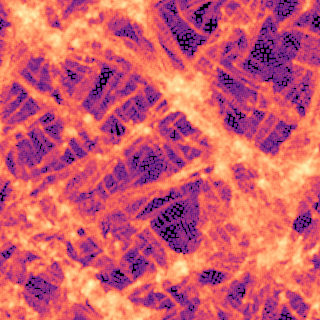
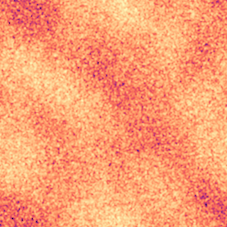

Project Genesis started from white noise. But the real universe didn't — its initial ripples have a specific power spectrum, measured by Planck. Here we seed structure from the true ΛCDM spectrum (Eisenstein–Hu transfer function, Planck 2018 parameters) and grow it. Filaments, clusters and voids condense with the correct correlations — the same web the real SDSS data shows.


P(k) plotted at right is the genuine ΛCDM matter power spectrum (Eisenstein–Hu 1998 transfer
function, Planck 2018 Ωm=0.315, Ωb=0.049, h=0.674, ns=0.965). Its turnover marks the horizon
size at matter–radiation equality — a real, measured scale. The structure is grown with the Zel'dovich approximation, the
standard first-order map of how those ripples become the cosmic web. Honest limit: Zel'dovich is first-order (it blurs after
shell-crossing) and this is 2-D — a faithful seed-and-grow, not a full N-body simulation. But the initial conditions are the
real ones, so the web inherits the universe's true statistics.
← Real Cosmic Web · The Four Poles · Genesis · params: Planck 2018